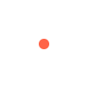

Scenes and video¶
Motion driven by Python rather than written as SMIL: scenes, per-frame updates, reusable behaviours, video files in and out, and baking that motion back into SMIL so an SVG plays it in a browser. Element animation itself (presets, easing, tweening) is in the Animation guide.
Python updates and SMIL together¶
A scene or render_animation can drive the same drawing from Python (update) and from SMIL. For each
frame at time t:
update(t)runs first and changes the document;SMIL is then applied at
ton a copy of the result (doc.at(t)), and that copy is drawn.
Python and SMIL on different attributes simply combine. On the same attribute SMIL wins, since it is
applied last, unless the animation has additive="sum", which adds to whatever update set (every
transform preset is additive, so update can move an element that a preset is spinning). The
duration defaults to the end of the last SMIL animation. Python does not run in a browser, so
doc.save("x.svg") keeps only the SMIL; a scene’s save("x.svg") bakes the Python motion into SMIL
first (see Baking). Video, GIF, APNG and WebP exports include both,
and scene.at(t) returns the frame at t with behaviours, update and SMIL applied.
import svgwriter as svg
class Drift(svg.Scene):
width, height, fps = 120, 120, 24 # duration: 2 s, the last SMIL end
def build(self, doc):
self.dot = doc.circle(60, 60, 10, fill="gold")
self.dot.animate.fade_in(0.5).tween("r", 10, 30, 2)
def update(self, seconds):
self.dot.cx = 30 + 30 * seconds # Python moves it
self.dot.r = 5 # ignored: the r tween wins
frame = Drift().at(1.0) # cx 60 from Python, r 20 from SMIL, fully faded in

Video through ffmpeg¶
render_animation draws frames and pipes them to ffmpeg (mp4, gif, webm, mov, apng; a .png path
writes numbered frames). The update callback changes the document for each frame:
import math
doc = svg.Document(100, 100)
ball = doc.circle(50, 50, 6, fill="tomato")
def update(document, seconds):
ball.place(50 + 30 * math.cos(math.pi * seconds), 50 + 30 * math.sin(math.pi * seconds))
# doc.render_animation("orbit.mp4", fps=30, duration=2, renderer="skia", update=update)

The built-in "skia" renderer returns raw RGBA frames. Any callable renderer(document, seconds) that
returns PNG bytes or a uint8 (H, W, 4) array works, as does a "module:function" name. Missing ffmpeg
raises FFmpegNotFoundError before any rendering.
Scenes¶
A svg.Scene subclass is one animation: class attributes set width, height, fps, duration and
renderer (defaults 640 by 360, 30 fps, the SMIL length, "skia"), build(doc) draws into an empty
document of that size once, and update(seconds) sets the state for each frame. SMIL animations in
the drawing play as well, so a scene can use presets, Python, or both.
class Pulse(svg.Scene):
width, height, fps, duration = 120, 120, 24, 2.0
def build(self, doc):
doc.rect(0, 0, 120, 120, fill="midnightblue")
self.dot = doc.circle(60, 60, 10, fill="gold")
self.dot.animate.fade_in(0.5)
def update(self, seconds):
self.dot.r = 10 + 30 * seconds / self.duration
pulse = Pulse()
still = pulse.render(1.0) # PNG bytes of the frame at 1 s
pulse.at(1.0) # the same frame as a Document
frames = list(pulse.frames()) # 48 frames, not encoded
# pulse.save() # Pulse.mp4; or save("pulse.gif"), save("pulse.png") for numbered frames

build receives the document rather than returning one, so the size is declared once, as class
attributes, and build holds only drawing code. It runs when the scene is created; keep the elements
that update changes on self. update gets absolute time, so frames can be drawn in any order. In a
notebook a scene displays as its animated SVG. svg.Scene(doc) animates an existing document as it is.
A file can hold any number of scenes. A class whose name starts with _ is skipped, so a shared base
class stays out of the list. svg.video.load_scenes returns them, and the command line renders them:
$ python -m svgwriter animate scenes.py --list # print the scene names
$ python -m svgwriter animate scenes.py # every scene to <Name>.mp4
$ python -m svgwriter animate scenes.py Intro Outro --format gif
$ python -m svgwriter animate scenes.py:Intro -o intro.webm
$ python -m svgwriter animate mypackage.scenes:Intro # an importable module
$ python -m svgwriter render scenes.py Intro --at 1.5 # one frame to Intro.png
--fps, --duration and --renderer override the scene’s settings. An .svg file is accepted too and
plays its SMIL. See examples/16_scenes/scenes.py.
Behaviours¶
A behaviour is Python motion you can reuse: a function of the element and the time in seconds that a
scene runs before every frame. Decorate it with @svg.preset.behavior; the element and the time come
first, and every option is keyword-only with a default (checked when the function is decorated, as for
animation presets):
import math
@svg.preset.behavior
def sway(element: svg.Element, seconds: float, *, angle: float = 10, period: float = 2) -> None:
"""Rock about the anchor by up to *angle* degrees."""
element.matrix = element.home.matrix
element.rotate(angle * math.sin(2 * math.pi * seconds / period))
class Garden(svg.Scene):
width, height, duration = 160, 100, 2.0
def build(self, doc):
stem = doc.rect(76, 30, 8, 60, fill="seagreen", anchor="bottom")
stem.animate.sway(angle=15) # by name, once it is in the scene
self.sun = self.attach(doc.circle(30, 25, 12, fill="gold"), svg.video.behaviors.hover, height=6)
def update(self, seconds):
self.sun.fill = svg.Color(1, 0.84 - 0.3 * seconds / self.duration, 0)
garden = Garden()
still = garden.render(0.5)
svg.preset.behavior.unregister("sway")
self.attach(element, function, **options) is typed with the function’s own options, so editors
complete and check them, and it returns the element; element.animate.<name>(...) does the same by
name once the element is in a scene’s document (outside one it raises ValueError). Behaviours run in
the order they were attached, all before update(seconds), so update sees their result.
element.home is a copy of the element taken when its first behaviour is attached. Start each frame
from it (element.matrix = element.home.matrix, then a relative move) rather than from the current state: the
motion is computed afresh every frame, so it never drifts and frames can be drawn in any order. The
built-in behaviours wiggle, hover and breathe (in svg.video.behaviors) work this way, about the
element’s anchor. @svg.preset.behavior(name=..., replace=True), svg.preset.behavior.list(),
svg.preset.behavior.get and svg.preset.behavior.unregister follow the same rules as animation presets, and behaviours
and animation presets share one set of names, since both are reached through element.animate.
Baking Python animation into SMIL¶
scene.bake() returns a copy of the document whose SMIL plays what the behaviours and update do, so
the animation runs anywhere SMIL does. Saving a scene as .svg, .svgz, .html or .pptx bakes it
automatically (no ffmpeg needed):
frame = garden.bake().at(1.0) # bake() is a Document; garden.document keeps its Python state
# the frame is the one the video shows at 1 s
# garden.save("garden.svg") # plays in a browser like the video
# garden.save("garden.pptx") # slide effects where PowerPoint has them
A scene whose motion ends where it starts can loop forever: set loop = True on the class (or pass
bake(loop=True)) and the baked animations repeat indefinitely in browsers and notebooks.
The scene is sampled fps times a second (bake(fps=...) to change it) and every element is compared
from sample to sample:
Change |
Baked as |
|---|---|
Numbers in attributes and properties ( |
|
Colours |
|
Path |
interpolated while the commands keep their shape, switching where they change |
Transforms |
|
|
|
Text content |
one copy of the text element per text, shown in turn with |
Elements added or removed |
|
Each channel keeps only the keyframes it needs: a straight run becomes two keyframes, and a curve keeps
as many as hold every sample within tolerance (default 0.01, in user units, degrees, scale factors or
colour channels from 0 to 1). A property set in the inline style moves to an attribute, which SMIL
animates. The document’s own SMIL is kept and plays on top of the baked animation, exactly as it plays
on top of update in the video. What SMIL cannot express (an element moving to another parent, an id
changing, CSS declarations that are not SVG properties, an attribute removed with no initial value) is
left out and listed in one warning. Baking runs update for every sample, so it leaves the scene at its
last moment.
Video in¶
svgwriter.motion.video.Video(path) reads a video lazily through ffmpeg: video[i] is frame i as an
<image>, video.at(seconds) the frame shown at that time, and iterating streams every frame as a
numpy array. Mix footage with vector animation in update:
from svgwriter.motion.video import Video
# clip = Video("footage.mp4")
# backdrop = doc.add(clip[0])
# def update(document, seconds):
# backdrop.color = clip.at(seconds).color